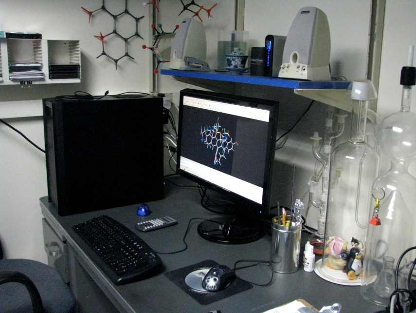
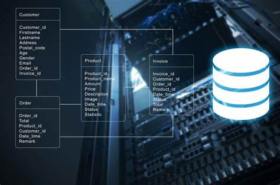
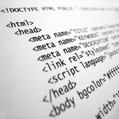

PROGRAMACION :La programación es el proceso de crear un conjunto de instrucciones que le dicen a una computadora como realizar algún tipo de tarea. Pero no solo la acción de escribir un código para que la computadora o el software lo ejecute. Incluye, además, todas las tareas necesarias para que el código funcione,Esta rama es enseñada en el instituto tecnologico san Agustín.
REDES I : Tipos de Topología de red:en redes I se desarrollaron varios cnceptos entre ellos el concepto de las topologias de red e qui los tipos de topologias mas conocidas
En esta red informática todos los dispositivos se conectan directamente a un canal y no existe otro vínculo entre nodos. Entre sus ventajas están la fácil instalación, tener poco cableado y que es muy sencillo aumentar o disminuir el número de aparatos que se adjuntan a la red
Se trata de una red cerrada formada por distintos componentes que forman una estructura anular. Cada nodo está vinculado solamente con los dos contiguos, por lo que para que la información pueda circular, cada estación debe transmitirla a la que tiene junto hasta que llegue a la receptora.
Funciona de igual manera que la red anterior pero existe una segunda estructura redundante que conecta a los nodos. Esto aporta más velocidad entre las terminales lejanas y una mayor confiabilidad ya que se pueden evitar fallos en la conexión.
Es una de las configuraciones más empleadas en Ecuador. Todos los dispositivos se conectan a un punto central, ya sea un concentrador, conmutador o servidor. Este punto funciona como un servidor, controlando y gestionando todas las funciones de la red.
Mezcla la topología de bus y de estrella y permite a los usuarios tener varios servidores. Esta red cuenta con un punto de enlace troncal desde el que se ramifican los demás nodos.
ARQUITECTURA DEL PC: La arquitectura de computadoras es el diseño conceptual y la estructura operacional fundamental de un sistema de computadoras.Es decir, es un modelo y una descripción funcional de los requerimientos y las implementaciones de diseño para varias partes de una computadora, con especial interés en la forma en que la unidad central de proceso (CPU) trabaja internamente y accede a las direcciones de memoria.
También la arquitectura del computador está basado en tres grandes principios que se aplican a todo dispositivo o componente del computador, estos tres principios son: velocidad, capacidad y tipo de conexión.
Base de datos : rama del entorno de desarrollo en el cual es El campo de aplicación principal de MySQL es el almacenamiento de datos en el contexto de las páginas web dinámicas. La combinación de MySQL con el software de servidores web Apache y los lenguajes de script PHP o Perl se ha consolidado como estructura clásica de software en el desarrollo web.
Internet : rama de entorno de desarrollo en el cual se aprende el lenguaje de marcado de hipertexto,es decir,un lenguaje que permite escribir texto de forma estructurada, y que esta compuesto por etiquetas ,que marcan el inicio y el fin de cada elemento del documento
| sebastian jose sevilla donado | sistemas y redes | ||
|---|---|---|---|
| estudiante de tercer semestre jornada sabados | |||